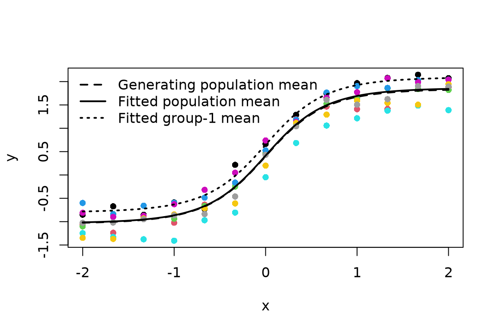

Multi-layer nonlinear mixed models
sommer development team
2026-11-11
Source:vignettes/sommer.multilayer.Rmd
sommer.multilayer.Rmd1. What should these models be called?
We use multi-layer nonlinear mixed model as the umbrella term when a multi-layer predictor is combined with random effects. For a non-Gaussian observation family, a more explicit name is generalized nonlinear mixed model with a multi-layer predictor. These are descriptions of the statistical model, not new fitting functions or separate covariance systems.
| Observation model | No random effects | With Gaussian random effects |
|---|---|---|
| Gaussian identity | Multi-layer nonlinear regression | Multi-layer nonlinear mixed model |
| Binomial, count, or another supported family | Generalized nonlinear regression with a multi-layer predictor | Generalized nonlinear mixed model with a multi-layer predictor |
A hidden layer is a deterministic transformation, not automatically a random effect. Conversely, an ordinary GLMM does not become a multi-layer model because it has several random-effect terms. Random weights must be declared explicitly, and additive random effects remain a different model from random effects inside hidden layers.
The current interface uses mmes(),
nonlinear_graph() and graph_term(). There is
no network() or dense() builder. The supported
graph has ordered input, affine,
tanh and identity nodes, with a scalar
identity output representing a link predictor, not a
response probability. More than one hidden layer and more than one unit
per layer can already be declared, subject to resource admission. ReLU,
arbitrary activation callbacks, penalized graph objectives, mini-batch
training and a graph accelerator backend are future extensions, not
features of the example below.
How is this different from popular deep learning?
These are not fundamentally different kinds of neural networks. The multi-layer function can have the same mathematical form in both settings. The main differences are the statistical model around the predictor, the treatment of dependence, and the fitting procedure.
| Aspect | Current sommer multi-layer models | Typical deep-learning workflow |
|---|---|---|
| Predictor | Explicit smooth graph within admitted resource limits | Often a large, flexible neural architecture |
| Observation model | Declared response family, link and nuisance parameters | A chosen loss, often also a negative log likelihood |
| Dependence | Explicit Gaussian random effects with estimated covariance and optional known relationships | Often independent training examples unless dependence is deliberately modeled |
| Fitting | Marginal ML with exact Gaussian integration or a Laplace approximation | Usually empirical-loss optimization with mini-batch SGD or Adam |
| Uncertainty | Explicit post-fit, checked local likelihood approximations | Ordinary training generally needs additional methods to produce uncertainty |
For example, conventional neural regression might specify
\[ y_{ij}=f_\theta(x_{ij})+\epsilon_{ij}. \]
A multi-layer mixed model can instead specify
\[ y_{ij}=f_\theta(x_{ij})+u_j+\epsilon_{ij}, \qquad u\sim N(0,\sigma_u^2K), \]
where \(K\) describes covariance between declared groups or individuals, potentially through pedigree or genomic relationships. Random deviations can also enter the network coordinates themselves. The defining addition is the structured distribution of those deviations, whose covariance is estimated and whose effects are integrated in the marginal likelihood, not simply another hidden layer.
The distinction is not “likelihood versus loss”: squared error and binary cross-entropy can correspond to Gaussian and binomial negative log likelihoods. Nor are these disjoint fields. Neural mixed-effects models, hierarchical networks and Bayesian neural networks can incorporate similar structures. Weight decay can have a prior/MAP interpretation, but is not by itself the same operation as integrating structured random effects.
Sommer’s model is not automatically a fully Bayesian neural network. Population network coordinates are generally estimated as fixed-effect parameters, while explicitly declared Gaussian deviations are integrated. Here “fixed-effect” does not mean that a weight is frozen during fitting. The post-fit uncertainty is a local approximation, not an automatic guarantee of calibrated intervals for any architecture.
The current sommer approach emphasizes relatively small, structured likelihood-based models in which covariance and prediction targets matter. Typical deep learning emphasizes flexible prediction at scale. Neither approach is inherently more accurate: compare them using a common response, a defensible target and validation respecting group dependence.
2. Predictor and parameterization
Layers are compositions of functions
For observation \(i\), let \(h_i^{(0)}\) contain the input covariates after any declared centering and scaling. A conventional hidden layer is
\[ a_i^{(\ell)} = W_i^{(\ell)}h_i^{(\ell-1)}+c_i^{(\ell)}, \qquad h_i^{(\ell)}=\tanh\{a_i^{(\ell)}\}, \quad \ell=1,\ldots,L, \]
where tanh acts componentwise. A scalar predictor can
then be written
\[ \eta_i = X_i\beta + v_i^\mathsf{T}h_i^{(L)}+c_i^{\mathrm{out}}+Z_{0i}b_0, \qquad g\{\operatorname{E}(Y_i\mid b)\}=\eta_i. \]
The graph supplies the composed nonlinear part. Ordinary fixed
formula terms supply \(X_i\beta\), and
a separate random= formula can supply the additive
deviation \(Z_{0i}b_0\). An identity
output does not require the response link \(g\) to be identity: for binomial-logit
responses, for example, the identity-output graph supplies log odds and
the family applies the inverse-logit once.
The mathematical convention above uses column vectors. In sommer’s
affine node declaration, weight-matrix rows
correspond to concatenated input units and columns to output
units. Thus a two-input, three-output layer needs a
2 x 3 matrix of parameter indices. The bias
vector has three indices. Indices start at one; a zero bias index means
no bias, not an additional fitted zero-valued parameter.
Graph coordinates can be fixed or random
Let \(\theta_{ri}\) be a natural graph coordinate used as a weight or bias. The parameter-model representation is
\[ \xi_{ri}=A_{ri}\alpha_r+Z_{ri}b_r,\qquad \theta_{ri}=T_r(\xi_{ri}),\qquad b\sim N\{0,G(\psi)\}. \]
An identity link uses \(T_r(\xi)=\xi\); a log-linked positive coordinate uses \(T_r(\xi)=\exp(\xi)\). Gaussian random deviations are on the working scale \(\xi\), not necessarily on the natural weight scale \(\theta\). Consequently, a log-linked random rate is lognormal on its natural scale. Its zero-deviation value and population mean are not the same quantity.
Repeated graph indices tie parameters: two edges
with the same index use one coordinate rather than two independently
estimated weights. Sharing a coordinate is not a covariance declaration.
Separate parameter(random=...) records are independent even
if their grouping factors have the same names. Correlated graph
coordinates require the native route’s explicit joint declaration.
The usual sommer covariance machinery defines \(G(\psi)\). A known relationship covariance
\(K\) describes covariance between
declared levels, with an estimated scale or coordinate covariance as
appropriate. For example, a single coordinate can have covariance \(\sigma_b^2K\). Use the established
Gu precision and level-ordering convention when supplying
\(K^{-1}\); graph depth does not change
its meaning. A Gaussian prior on random coordinates induces shrinkage,
but is not the same as a user-selected penalty on fixed network
weights.
Two public declaration routes
-
Native component: one additive
graph_term("net"), registered inpredictors=list(net=net), withoutparametersoverrides. The graph’sparameterMapcan mark fixed/random coordinates and identity/log transforms. Itsrandomorjointdeclarations define coordinate covariance. Ordinary additive random effects may be declared separately. -
Parameter regressions or graph compositions: use
namespaced coordinates such as
"net::rate"=parameter(fixed=~Env, link="log"). This selects the bounded reference route. The graph must not also contain internal random maps or joint covariance declarations. Omitted coordinates inherit the graph transform and use fixed intercepts. Reference reduced-rank covariance is explicitly rejected.
These are not interchangeable for every covariance/control combination. The reference path admits at most 30 parameter declarations, 60 mean coefficients and 512 random modes for nonexact integration, as well as a dense-memory check. Native execution also has workspace checks; a graph declaration is not a promise of arbitrary network size.
Public fitting start values are natural
parameter values. Named regression-coefficient starts instead
use start=list(coefficients=...) on the specification
route. The standalone nonlinear_graph_eval() accepts
working coordinates, so a graph coordinate with a log
transform takes log(rate) there. Do not apply either
transform twice.
3. Likelihood and optimization
Marginal likelihood, not an arbitrary training loss
Write \(\lambda=(\beta,\alpha,\psi,\phi)\) for the free fixed coefficients, covariance coordinates and family nuisance parameters. The likelihood is
\[ L(\lambda)=\int p(y\mid b,\lambda)\, \varphi\{b;0,G(\psi)\}\,db. \]
Supported families supply the response density, link, score and curvature. Grouped binomial trials, negative-binomial shape, Gaussian/Gamma dispersion and ZIP structural-zero predictors are parts of that likelihood, not interchangeable squared-error tuning parameters. Multinomial logits have joint observation curvature and cannot be treated as independent binary responses.
Nonlinear graph likelihood fits require explicit ML
through mmes_method(objective="ml"). Ordinary Gaussian REML
and mixed-model PQL defaults elsewhere in sommer are unchanged.
Three integration cases must be distinguished:
- No random effects: there is no random integral.
- Gaussian identity with only additive Gaussian random effects: conditional on the fixed graph coordinates, \(y\) is Gaussian with covariance \(V=ZGZ^\mathsf{T}+\sigma_e^2I\) for independent residuals. The random integral is exact even though the fixed mean is nonlinear in its weights.
- Random nonlinear coordinates or non-Gaussian random models: fitting uses a conditional-mode Laplace approximation, not an exact integral.
Conditional modes and exact conditional curvature
For fixed \(\lambda\), define the negative conditional objective
\[ \Phi(b;\lambda)=-\log p(y\mid b,\lambda) +\tfrac12 b^\mathsf{T}G^{-1}b. \]
The conditional mode \(\widehat b\) minimizes \(\Phi\). At a certified mode with positive undamped Hessian \(H_b=\nabla_b^2\Phi(\widehat b;\lambda)\), the Laplace log likelihood is
\[ \ell_{\mathrm{Lap}}(\lambda)= -\Phi(\widehat b;\lambda) -\tfrac12\log|G| -\tfrac12\log|H_b|. \]
The response-density constants are included in \(\Phi\); the Gaussian prior’s normalization cancels the Laplace factor \((2\pi)^{q/2}\). This formula assumes a proper Gaussian prior in the admitted latent coordinates. It does not justify inserting a ridge into a singular covariance.
Let \(J=\partial\eta/\partial b\), \(s=\partial\log p(y\mid\eta)/\partial\eta\) and \(C=-\partial^2\log p(y\mid\eta)/\partial\eta\,\partial\eta^\mathsf{T}\). Then
\[ H_b = G^{-1}+J^\mathsf{T}CJ -\sum_i s_i\,\nabla_b^2\eta_i. \]
The final term matters when weights or hidden-layer coordinates are random. Omitting it is a Gauss-Newton approximation, not the conditional Hessian used by the supported graph likelihood. For multinomial responses \(C\) contains cross-logit blocks. Parameter transforms also contribute second derivatives.
Outer optimization and certificates
The outer optimizer updates the free coordinates using the marginal objective. Differentiating a Laplace objective must account for both mode motion and the changing log determinant. Current native fixed-coordinate Gaussian graphs have analytic outer scores; random-coordinate/family graphs use reported central differences. Reference expressions compose symbolic and native graph derivatives for conditional curvature and use numerical outer scores.
optimizer controls outer work; mode
controls inner solves. These are separate budgets. A small likelihood
change, or an optimizer return code alone, is not a stationarity
certificate. Inspect fit$convergence and the fit
diagnostics before interpreting results.
Optimization is deterministic likelihood optimization, not mini-batch SGD or Adam. Multiple layers can create local optima, saturated activations and weakly identified directions. Start from sensible, nonsaturated values and compare separately fitted starts when necessary. Convergence does not prove a global optimum. Hidden-unit permutations and sign symmetries can yield equivalent predictors, while additional parameter redundancies can make curvature singular. A precise fitted curve does not guarantee precise individual weights.
Does sommer use backpropagation to estimate hidden weights?
Yes for graph derivatives, but backpropagation is not itself the weight-update algorithm. Sommer’s native graph evaluator uses reverse-mode differentiation: a forward pass computes node values, and a reverse pass propagates sensitivities from the scalar output through the hidden nodes to the shared parameter coordinates. This is the chain-rule calculation commonly called backpropagation.
For a tanh layer, using the column-vector convention
above, output sensitivity propagates as
\[ \frac{\partial f}{\partial a^{(\ell)}}= \frac{\partial f}{\partial h^{(\ell)}}\odot \{1-(h^{(\ell)})^2\},\qquad \frac{\partial f}{\partial h^{(\ell-1)}}= (W^{(\ell)})^\mathsf{T} \frac{\partial f}{\partial a^{(\ell)}}. \]
Here \(\odot\) is elementwise multiplication. Contributions from repeated parameter indices are accumulated into the same gradient coordinate; declared parameter transforms also enter the chain rule.
Keep three operations distinct:
- Differentiate the graph: compute how its output changes with the hidden weights and biases using reverse-mode derivatives.
- Differentiate the statistical objective: combine graph derivatives with response-family scores and the random-effect integration terms. The supported random-coordinate Laplace target also requires higher-order graph information for conditional curvature.
- Update the fitted coordinates: the likelihood optimizer chooses parameter updates and checks convergence. Current fitting is not mini-batch SGD or Adam merely because it uses backpropagation.
Thus backpropagation is part of fitting, but not every outer likelihood gradient is currently obtained by one end-to-end reverse pass. Native fixed-coordinate Gaussian graphs use analytic outer scores. Native random-coordinate/family graphs currently use central differences of the full marginal objective; the reference route also uses numerical outer scores, while composing symbolic/native derivatives internally. Those finite differences include the changing random-effect modes and Laplace determinant. Backpropagating only through the predictor would not supply that complete marginal score.
4. A runnable two-hidden-layer example
We use a small Gaussian model with two one-unit hidden layers:
\[ y_{ij}=b+a\tanh\{k\tanh(kx_{ij})\}+u_j+e_{ij},\quad u_j\sim N(0,\sigma_u^2),\quad e_{ij}\sim N(0,\sigma_e^2). \]
The positive rate \(k\) is shared by the two hidden affine nodes. The amplitude \(a\) is also positive. Hidden biases are omitted deliberately, and the graph contains the baseline \(b\), so the formula removes its ordinary intercept. This is a deliberately constrained multi-layer model, not an unconstrained network or evidence that arbitrary network weights are identified.
All graph coordinates are fixed population parameters; the additive group intercept \(u_j\) makes this a mixed model. Both variances are estimated. Its Gaussian random integral is exact.
library(sommer)
#> Loading required package: Matrix
#> Loading required package: enhancer
#> Loading required package: MASS
#> Loading required package: crayon
#> sommer: No accessible NVIDIA GPU detected; only CPU options are available.
set.seed(20261111)
dat <- expand.grid(x=seq(-2,2,length.out=13),
group=factor(seq_len(8)))
truth <- function(x) .4+1.8*tanh(1.1*tanh(1.1*x))
group_effect <- rnorm(nlevels(dat$group),sd=.25)
dat$y <- truth(dat$x)+group_effect[dat$group]+rnorm(nrow(dat),sd=.12)In the graph below, index 1L appears in both hidden
weight matrices; index 2L is the output amplitude and index
3L is the baseline.
net <- nonlinear_graph(
nodes=list(
x=list(op="input",column="x"),
affine1=list(op="affine",inputs="x",weights=matrix(1L),bias=0L),
hidden1=list(op="tanh",input="affine1"),
affine2=list(op="affine",inputs="hidden1",weights=matrix(1L),bias=0L),
hidden2=list(op="tanh",input="affine2"),
mean=list(op="affine",inputs="hidden2",weights=matrix(2L),bias=3L),
output=list(op="identity",input="mean")
),
output="output",
parameters=c("rate","amplitude","baseline"),
parameterMap=list(
rate=list(type="fixed",transform="log"),
amplitude=list(type="fixed",transform="log"),
baseline=list(type="fixed")
)
)
# The standalone evaluator uses working, not natural, coordinates.
check <- nonlinear_graph_eval(net,dat,
c(rate=log(1.1),amplitude=log(1.8),baseline=.4))
stopifnot(max(abs(check$output-truth(dat$x)))<1e-12)Fit through the public native-component route. There is no separate
nonlinear= argument and no task module in the
public control object.
fit <- mmes(
y~0+graph_term("net"),
random=~group,
predictors=list(net=net),
data=dat,
family=gaussian(),
start=list(parameters=c(rate=1,amplitude=1.6,baseline=.3)),
method=mmes_method(objective="ml",integration="exact"),
control=mmes_control(
optimizer=list(maxit=200),
diagnostics=list(verbose=FALSE,dateWarning=FALSE)
)
)
stopifnot(isTRUE(fit$convergence),is.finite(as.numeric(logLik(fit))))
fit$convergence
#> [1] TRUE
coef(fit,type="all")
#> graph:rate graph:amplitude
#> 1.10263438 1.80480704
#> graph:baseline covariance:vsm(ism(group)):sigma2
#> 0.41468458 0.04033430
#> residual:variance
#> 0.01438883For this native fit, coef() reports natural graph
parameters and coef(type="all") adds natural
covariance/family entries. Thus the first two values above are the rate
and amplitude, not their logarithms. coef(type="working")
instead returns the optimizer coordinates, including the log-transformed
graph parameters. Specification-route default coefficients are
regression coefficients on their declared link scales; do not assume
that the two result classes use identical reporting scales.
grid <- data.frame(x=seq(-2,2,length.out=81),
group=factor("1",levels=levels(dat$group)))
zero <- predict(fit,newdata=grid,target="zero",type="response")
conditional <- predict(fit,newdata=grid,target="conditional",type="response")
population <- predict(fit,newdata=grid,target="population",type="response")
# Here additive zero-mean effects and an identity link make these equal.
stopifnot(isTRUE(all.equal(as.numeric(zero),as.numeric(population),
tolerance=1e-7)))
head(data.frame(x=grid$x,zero=as.numeric(zero),
conditional=as.numeric(conditional),
population=as.numeric(population)))
#> x zero conditional population
#> 1 -2.00 -1.014312 -0.7823162 -1.014312
#> 2 -1.95 -1.012257 -0.7802613 -1.012257
#> 3 -1.90 -1.009958 -0.7779620 -1.009958
#> 4 -1.85 -1.007385 -0.7753886 -1.007385
#> 5 -1.80 -1.004504 -0.7725077 -1.004504
#> 6 -1.75 -1.001278 -0.7692817 -1.001278
plot(dat$x,dat$y,col=as.integer(dat$group),pch=16,
xlab="x",ylab="y")
lines(grid$x,truth(grid$x),lty=2,lwd=2)
lines(grid$x,zero,lwd=2)
lines(grid$x,conditional,lty=3,lwd=2)
legend("topleft",c("Generating population mean","Fitted population mean",
"Fitted group-1 mean"),lty=c(2,1,3),lwd=2,bty="n")
Simulated grouped observations, generating population mean, fitted population mean, and fitted group-1 conditional mean.
This one simulated dataset illustrates the API and checks the graph parameterization. It is not a recovery study or validation of a chosen architecture. Evaluate predictive performance on held-out groups when the scientific target is prediction for new groups, rather than randomly splitting correlated observations from the same groups.
5. Changing the statistical model
Non-Gaussian observations
The same graph can supply the log-odds predictor of a binary outcome.
The following is a specification template, not an executed
second fit; binary_dat must contain scientifically
appropriate binary observations and the input/group columns. Do not
reuse the continuous y values above as binomial
responses.
binary_fit <- mmes(
success~0+graph_term("net"),random=~group,
predictors=list(net=net),data=binary_dat,family=binomial("logit"),
start=list(parameters=c(rate=1,amplitude=1.6,baseline=0)),
method=mmes_method(objective="ml",integration="laplace"),
control=mmes_control(diagnostics=list(verbose=FALSE,dateWarning=FALSE))
)Here \(p_{ij}=\operatorname{logit}^{-1}\{f(x_{ij})+u_j\}\). The additive prior is still Gaussian on the link scale, but the observation model is binomial and its random integral uses Laplace. This is a generalized nonlinear mixed model with a multi-layer predictor.
Random effects inside a hidden-layer coordinate
To let the shared rate vary between groups, use a namespaced
parameter model. Because net above has no internal random
maps, it can also be used on this reference route:
rate_fit <- mmes(
y~0+graph_term("net"),random=~group,
predictors=list(net=net),
parameters=list(
"net::rate"=parameter(fixed=~1,random=~group,link="log")
),
data=dat,family=gaussian(),
start=list(parameters=c("net::rate"=1,
"net::amplitude"=1.6,"net::baseline"=.3)),
method=mmes_method(objective="ml",integration="laplace"),
control=mmes_control(diagnostics=list(verbose=FALSE,dateWarning=FALSE))
)The same group-specific rate enters both hidden layers: \(k_j=\exp(\alpha_k+v_j)\). The additive intercept \(u_j\) and the rate deviation \(v_j\) are separate independent random records in this declaration, not an implicitly correlated pair. Even for Gaussian responses this random-rate model needs Laplace. It is a different model from the exact additive example, and this unevaluated template makes no claim that its extra variance component is estimable from the small simulated dataset.
6. Prediction and uncertainty are different operations
For the fitted parameters, the three prediction targets are
\[ \mu_i^{\mathrm{conditional}}=g^{-1}\{\eta_i(\widehat b)\},\qquad \mu_i^{\mathrm{zero}}=g^{-1}\{\eta_i(0)\},\qquad \mu_i^{\mathrm{population}} =\operatorname{E}_{b\sim N(0,\widehat G)} [g^{-1}\{\eta_i(b)\}]. \]
These equalities describe scalar response means; categorical response
predictions are probability vectors. Population predictions integrate
the prior random-effect distribution at fitted
parameters, not the posterior distribution of the fitted groups
and not parameter-estimation uncertainty. For type="link",
population prediction instead averages \(\eta_i(b)\). In general, \(\operatorname{E}[g^{-1}(\eta)]\ne
g^{-1}(\operatorname{E}[\eta])\). Joint predictor quadrature is
bounded by dimension, accuracy and memory.
The additive Gaussian example has population mean equal to its zero target. Nonlinear random rates and nonidentity response links generally break that equality.
Uncertainty is explicitly post-fit through
post_nonlinear(), vcov(),
confint() or predict(se.fit=TRUE). It requires
reconstruction, stationarity, derivative agreement, interior
covariance/nuisance coordinates and locally identified positive
curvature. Modes are re-certified more tightly for numerical post-fit
derivatives without changing the saved fitting controls or model.
Inverse conditional mode curvature holds fitted marginal parameters fixed. Approximate empirical Bayes PEV also includes mode sensitivity to estimated parameters; it is not exact frequentist PEV. Local normal confidence/prediction intervals are not automatic guarantees for unidentified weights, boundary variances, discrete responses or a data-selected architecture. Fitting and an ordinary summary do not silently compute uncertainty.
7. Current envelope and planned extensions
The current smooth multi-layer implementation supports admitted
Gaussian, binomial logit/probit/cloglog, Poisson/NB2/ZIP log, Gamma log,
ordinal logit/probit and reference-category multinomial families,
including familym() mixtures. A scalar graph supplies one
predictor per expanded category row; category-specific mappings must be
explicit. Free ordinal location thresholds must not alias mean
parameters.
The development roadmap separates the following planned work:
- ReLU and other nonsmooth activations, with an explicit knot and integration/inference policy.
- Wider models, scalable derivatives/solves, and measured resource admission.
- Penalized fixed-weight objectives with explicit statistical interpretation.
- Stochastic training with a justified sampling unit and full-objective checks.
- Optional accelerators with deterministic CPU parity and precision checks.
None of these follows merely from the ability to draw additional graph nodes. Existing GPU support for other sommer solvers does not establish a GPU backend for this graph likelihood.
See the model specification guide for the other model classes and public routing, and the numerical controls guide for available controls.